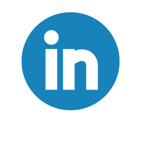

<!--- <!DOCTYPE html>
<html>
<head>
    <meta charset="utf-8">
     <link rel="stylesheet" type="text/css" rel='stylesheet' href="bootstrap-4.1.2-dist/css/bootstrap.css">
 </head>
 
 <body>
     <div class="container">
  <nav class="nav nav-pills nav-fill">
  <a class="nav-item nav-link" href="index.html">Home</a>
  <a class="nav-item nav-link" href="Phaneendra_AboutMe.html">About Me</a>
  <a class="nav-item nav-link" href="resume.html">Resume</a>
  <a class="nav-item nav-link active" href="workexperience.html">Work Experience</a>
  <a class="nav-item nav-link" href="projects.html">Projects</a>
  <a class="nav-item nav-link" href="contact.html">Contact Me</a>


</nav>
</div>
</body>

   <div class='jumbotron'>
 <h1><center>Work Experience</center></h1>

 </div>
Leading and engaging in hands-on engineering projects at the Dublin High School 
Engineering and Design Academy has paved my way to learn and explore a variety 
of concepts in science and technology. The academy has helped me nurture my knowledge 
in Computer Science and given me the confidence to explore these skills further down 
the career line. 

<br></br>

The academy gave me an opportunity to attend coding (Python) workshops at UC Berkeley 
that roused my eagerness to explore more coding languages, including HTML, CSS, and Java, 
in the future. I mastered graphics in Python and made everlasting relationships with some
of my Berkeley peers. Some components of graphics I learned included the color spectrum (rgb)
used in coding and Mandelbrot/Julia graphics. 
<br></br>
I also visited the Solar Bos company, a solar energy equipment supplier in Livermore. 
I was able to use my knowledge I gained from this experience on my upcoming Engineering
project (which can be viewed in the Projects tab of this website), which focused on building 
solar cell vehicles in addition to vehicles powered by hydrogen cells. 
<br></br>
I attended two speeches presented by Lawrence Livermore National Laboratory scientists 
last month. A speech that especially blew my mind was about Accelerator Mass Spectrometer 
machines, which was presented by Dr. Michael Malfatti. I actually learned about a variety
of simple machines in my Engineering class a few months ago and this presentation combined
all of my knowledge together. Seeing an actual machine that is widely used in the world fascinated me. 
I never knew that pulleys can be used in a machine that specializes in developing new drugs or 
doing low dose toxicology tests. 
</br>

<br>
I also had the privilege of meeting Maynard Holliday who is currently a senior 
engineer at Rand Corporation and was a government advisor in the 2015 Defense Science Board 
and the Pentagon. He is also involved in former president Barack Obama's My Brother's 
Keeper iniative, that focuses on increasing opportunities for young people. I 
got inspired to continue learning engineering when he described his engineering work
as the Under Secretary of Defense senior technical advisor, including his job of giving
input on the sustainment and development aspects for his project. 
</br>


You will either find me working in my office or volunteering at a local hospital. 

 I am also the founder of You and I Give, an organization where we raise funds for local hospitals. Our current project is to raise $1000 for terminally ill children at George Mark Children's House. This amount will be used to provide financial support to cover patients' costs of hydrotherapy sessions, bereavement for families, and medications/medical devices. 
   
</div>

<footer>
 
    <div class="footer">
  
    
   

</footer>

</html>
--->
